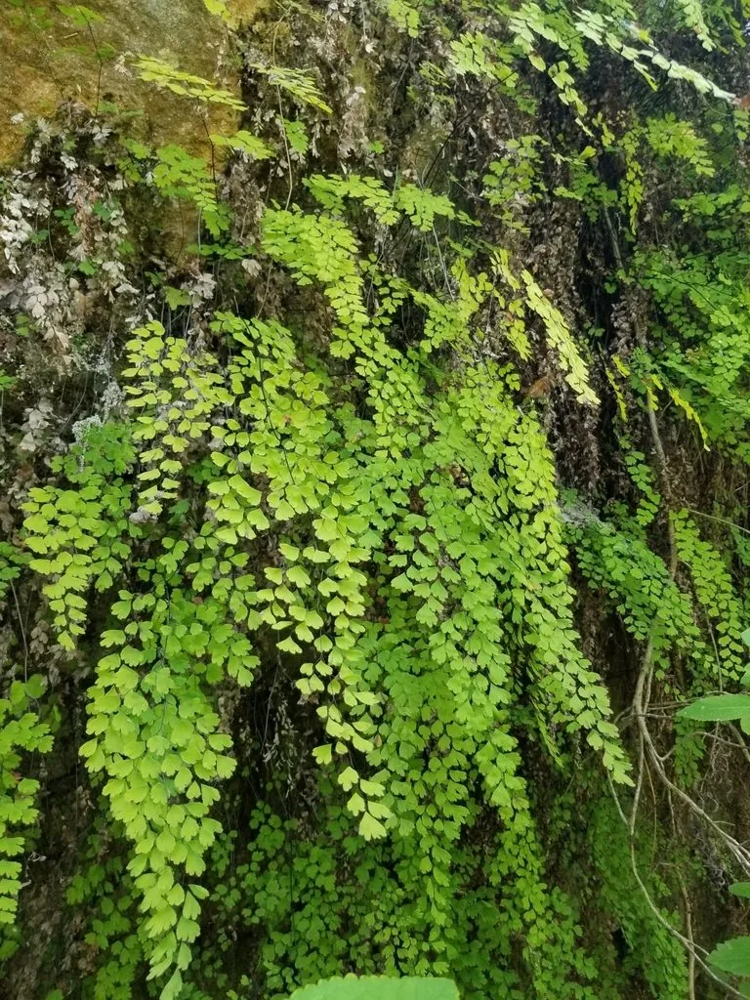

蕨类与裸子植物 · 植物界
铁线蕨 Adiantum capillus-veneris

铁线蕨的叶柄乌黑发亮、细韧如铁丝，扇形小叶轻盈雅致，既是常见的观赏蕨类，也是民间常用的中草药。
- 分类
- 门蕨类植物门纲水龙骨纲目水龙骨目科凤尾蕨科属铁线蕨属
- 栖息环境
- 溪边阴湿石壁、林下岩缝与石灰岩地区，喜温暖半阴和高空气湿度
- 地理分布
- 中国长江以南各地及全球热带、亚热带温暖地区
- 保护级别
- 暂无评估；野生种群数量稳定
物种志
铁线蕨是凤尾蕨科的小型多年生蕨类，株高一般 15–40 cm。它的根状茎横走，叶柄细长、乌黑发亮且坚韧，宛如铁丝，因此得名。叶片为二至三回羽状复叶，小羽片呈扇形或斜方形，边缘常有不规则浅裂，质地薄如纸，整体轮廓像一把修长的羽毛扇。叶背边缘的孢子囊群近圆形，被略反卷的叶缘覆盖。
铁线蕨喜温暖湿润和半阴环境，常见于溪边、阴湿石壁、林下及石灰岩缝隙中，不耐寒，也不耐长期干旱。它靠孢子繁殖，也可分株，适宜在疏松透气、富含腐殖质的土壤中栽培，是室内盆栽与假山点缀的常用植物。全草入药，有清热利湿、止咳平喘之效。除中国外，铁线蕨广泛分布于全球温暖地区，是分布最广的蕨类之一。
形态与习性
- 株高一般 15–40 cm
- 叶柄乌黑发亮，细韧如铁丝
- 叶二至三回羽状复叶，小羽片扇形
- 孢子囊群近圆形，生于叶缘反卷处
- 光照喜半阴散射光，忌强光暴晒
- 水分喜湿润，不耐长期干旱
- 药用全草清热利湿、止咳平喘
- 繁殖孢子繁殖或分株繁殖
趣味知识
- 铁线蕨的叶柄坚韧如铁丝，古代有人用它编织小器物。
- 它常生长在石灰岩地区，是钙质土壤的指示植物之一。
- 在西方它被称为“少女发蕨”，常被用作婚礼花束的配叶。